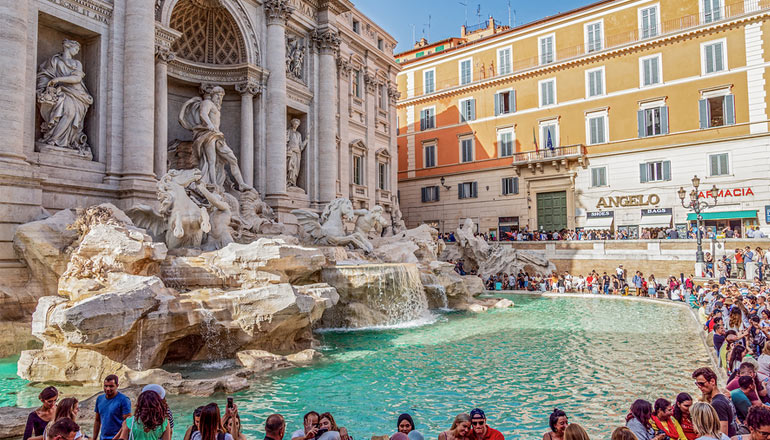
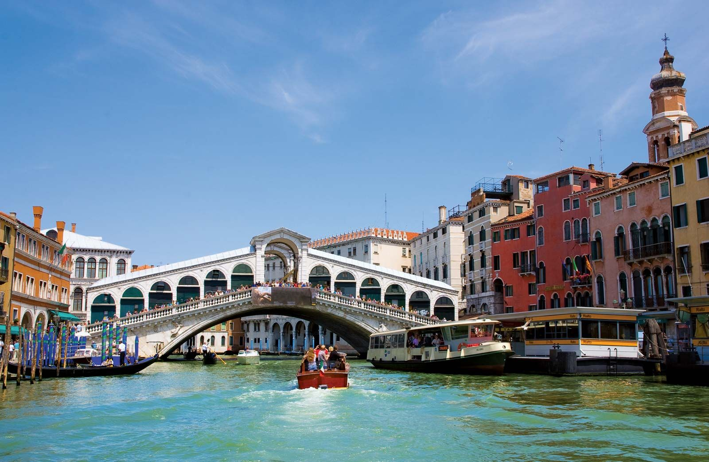
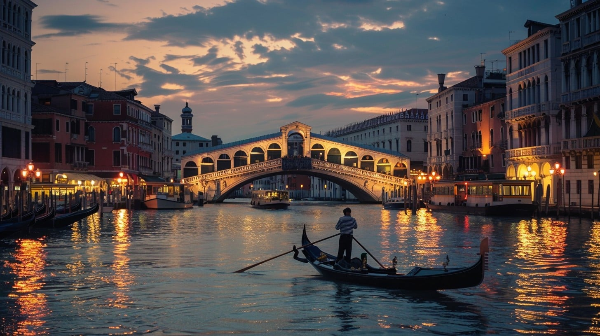
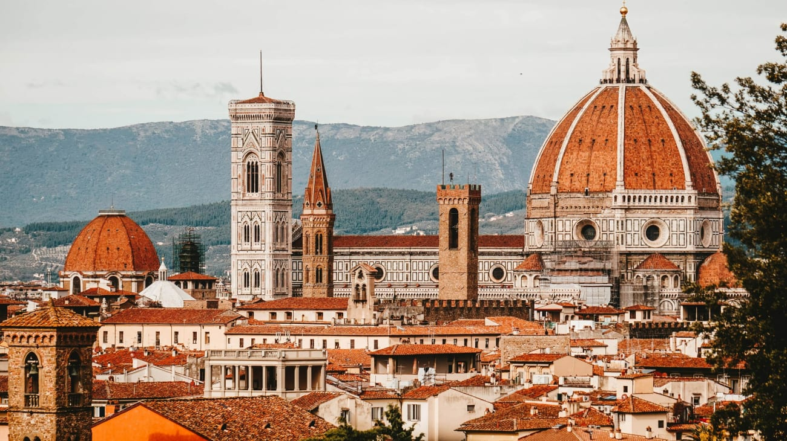
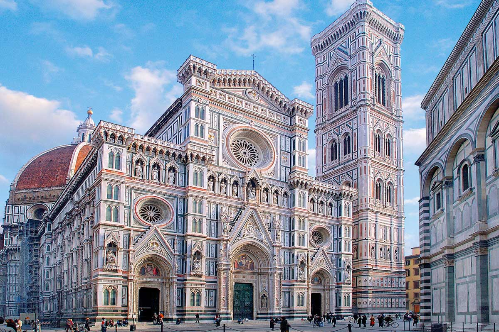
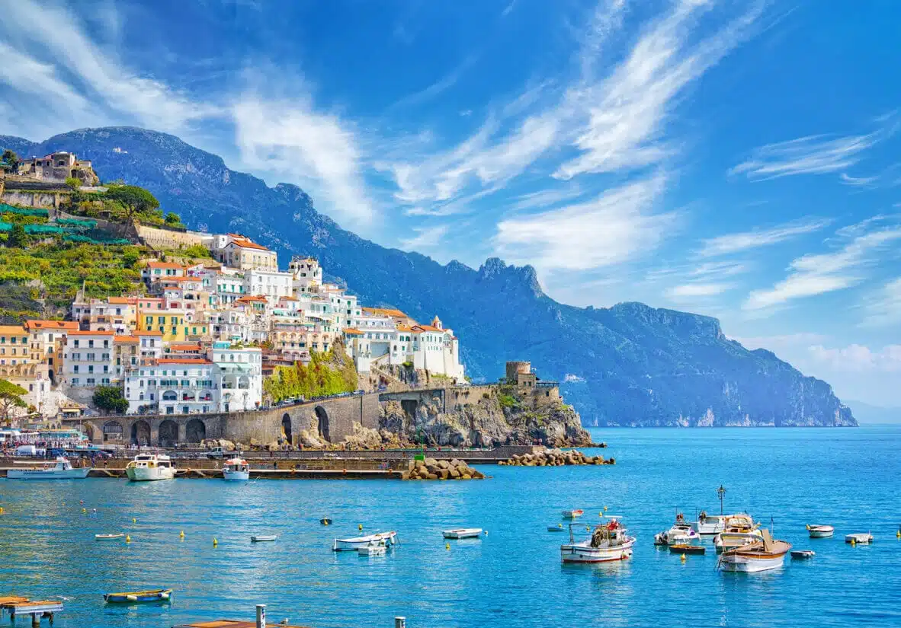
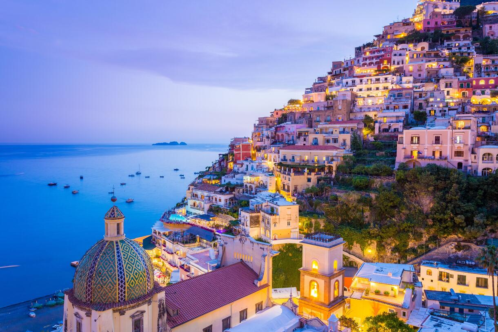
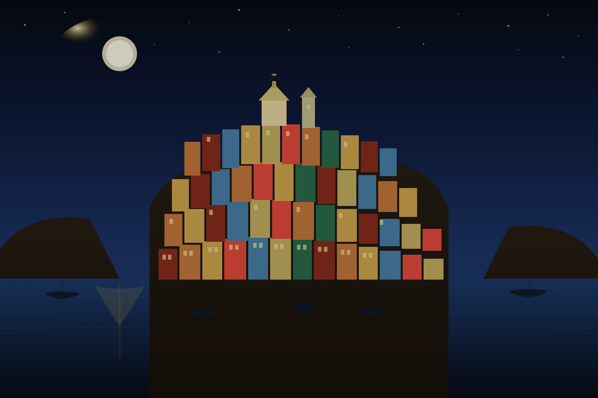
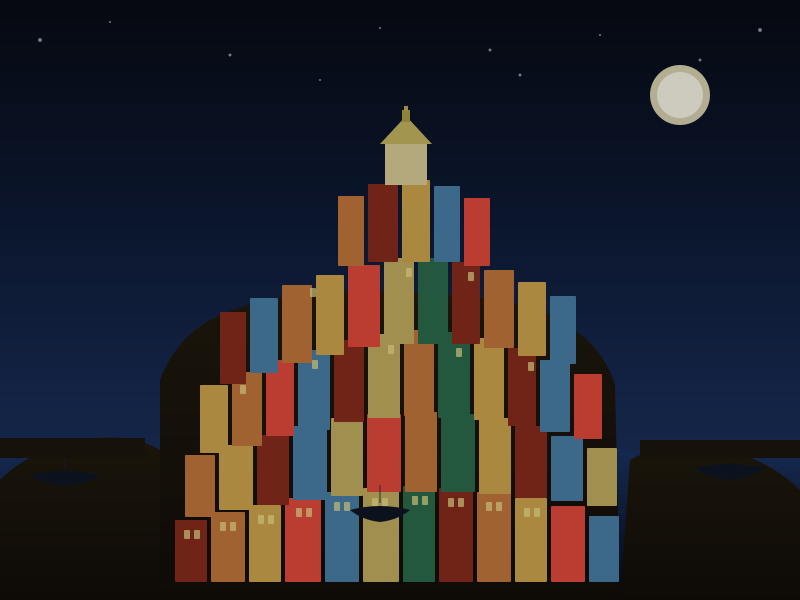

01
Roma
La Città Eterna
جایی که هر سنگفرش هزار سال تاریخ دارد. از کولوسئوم تا فواره تروی، رم شهری است که هرگز فراموش نمیشود.
- Colosseo all'alba
- Fontana di Trevi
- Trastevere di notte


02
Venezia
La Serenissima
شهری روی آب، جایی که کانالها به جای خیابان هستند. ونیز رویایی است که واقعی به نظر میرسد.
- Canal Grande al tramonto
- Piazza San Marco
- Gondola sotto la luna


03
Firenze
La Culla del Rinascimento
گهواره رنسانس، جایی که هنر و زیبایی در هر خیابان جاری است. فلورانس شهر میکلآنژ و داوینچی است.
- Duomo al mattino
- Ponte Vecchio
- Galleria degli Uffizi


04
Amalfi
Il Paradiso Mediterraneo
ساحلی که رویا در آن زندگی میکند. خانههای رنگارنگ روی صخرهها، آبهای فیروزهای و عطر لیمو در هوا.
- Scogliere di Positano
- Acque turchesi
- Profumo di limoni


05
Cinque Terre
Le Cinque Perle
پنج دهکده رنگارنگ روی صخرههای دریا. جایی که طبیعت و معماری در هم آمیختهاند و هر تصویر مثل نقاشی است.
- Vernazza al tramonto
- Sentiero Azzurro
- Colori di Riomaggiore